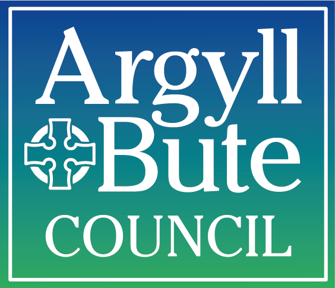

<div class="navbar">
  <div class="navbar-inner">
    <div class="left"><a href="#" class="back link"> <i class="icon icon-back"></i><span>Back</span></a></div>
    <div class="center sliding">Main page</div>
  </div>
</div>
<div class="pages">
  <div data-page="mainpage" class="page navbar-fixed">
    <div class="page-content">
      <div class="content-block">

  <!-- Just add additional "back" class to link -->
  <a href="index.html" class="back button button-fill"> Go back to home page </a>


  <p style="text-align:middle">
<h2 class="color-orange">This app was designed by the Digital Leaders of Dunoon Primary School.</h2><br />

<br />
    
  </p>
      </div>
    </div>
  </div>
</div>
